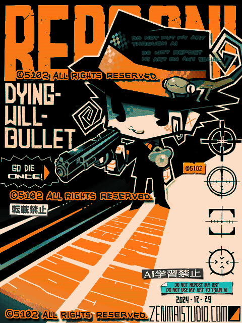

Made with
Tegaki Editor
手書きブログで描いたもの。
おい。おもしれー漫画！「家庭教師ヒットマンREBORN!」を最近読み始めた。
小学生時代だったかな？テレビアニメの宣伝をたまに見かけるから、タイトルだけ憶えていた。リボーン君（君付けしていいキャラなのか?）のキャラデザがマジで好きだ。
なんか、いろいろな要素に厨二心がソワソワしますね。中学生時代にこの漫画に手出したらヤバかったかもしれない。黒歴史が倍増してたかもしれない。
さて、手書きブログはマスク機能もないから、一回描いたものを「やっぱ別の色に変えたい」と思っても簡単にはいかない。
今回の絵はそれで苦戦した。いや、毎回してる。
徹底的に脳みそ使わないお絵かきツールだよ。力こそパワーで、ひたすらペンでグリグリと強行突破するしかないのだ。
2024/12/29
 家庭教師ヒットマンREBORN!
家庭教師ヒットマンREBORN!